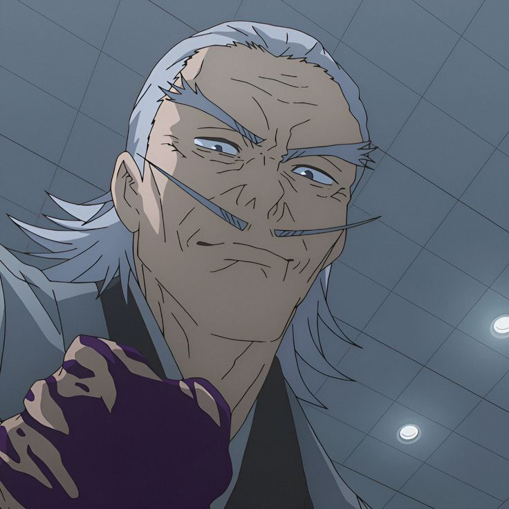

Characters/voice
Zenin, Naobito

-
- Japanese: Jouji Nakata
- English: Kyle Hebert
- Portuguese (BR): Guilherme Lopes
- French: Marc Bretonnière
- Italian: Marco Balbi
- Spanish: Rubén León
Zenin, Maki

-
- Japanese: Mikako Komatsu
- English: Allegra Clark
- Portuguese (BR): Natali Pazete
- French: Audrey Sourdive / Anna Lauzeray Gishi
- Italian: Elisa Giorgio
- Spanish: Anette Ugalde
Zenin, Mai

-
- Japanese: Marina Inoue
- English: Laura Post
- Portuguese (BR): Raquel Masuet
- French: Bérangère Rochet
- Italian: Martina Tamburello
- Spanish: Casandra Acevedo
Yoshino, Junpei

-
- Japanese: Yoshitaka Yamaya
- English: Nicolas Roye
- Portuguese (BR): Hugo Myara
- French: Rémi Gutton
- Italian: Tamburrini, Sebastiano
- Spanish: Piedra, José Luis
Yaga, Masamichi

-
- Japanese: Takaya Kuroda
- English: Keith Silverstein
- Portuguese (BR): Gutemberg Barros
- French: Frédéric Souterelle
- Italian: Luca Semeraro
Tsukumo, Yuki

-
- Japanese: Noriko Hidaka
- English: Anjali Kunapaneni
- Portuguese (BR): Amanda Manso
- French: Mélanie Anne Paillié
- Italian: Chiara Francese
Toudou, Aoi

-
- Japanese: Subaru Kimura
- English: Xander Mobus
- Portuguese (BR): Filipe Albuquerque
- French: Jérémy Zylberberg / Jessie Lambotte
- German: Daniel Welbat
- Italian: Davide Fazio
- Spanish: Joel Gómez Jiménez / Carlos Mireles
Miwa, Kasumi

-
- Japanese: Chinatsu Akasaki
- English: Allegra Clark
- Spanish: Romina Marroquín Payró
- French: Cindy Lemineur
- German: Julia Meynen
- Portuguese (BR): Helena Palomanes
- Italian: Giulia Bersani
Mei Mei

-
- Japanese: Kotono Mitsuishi
- English: Amber Lee Connors
- French: Sophie Planet
- Portuguese (BR): Angélica Borges
- Spanish: Azucena Valadez
- Italian: Valentina Pollani
Mahito

-
- Japanese: Nobunaga Shimazaki
- English: Lucien Dodge
- Portuguese (BR): Leonardo Santhos
- Spanish: Ricardo Bautista
- German: Dirk Stollberg
- French: Yoann Sover
- Italian: Marcello Gobbi
Kamo, Noritoshi

-
- Japanese: Satoshi Hino
- English: Landon McDonald
- Portuguese (BR): Francisco Quintiliano
- French: Alexandre Gillet / Gatto, Cécile
- German: Tim Knauer
- Italian: Andrea La Greca
- Spanish: Becerril, Diego / Domínguez Pineda, Carlos
Jougo

-
- Japanese: Shigeru Chiba
- English: Michael Sorich
- Spanish: Alfonso Obregón
- French: Gilbert Lévy
- Portuguese (BR): Ricardo Rossatto
- Italian: Massimiliano Lotti
Itadori, Wasuke

-
- French: Gérard Surugue
- Portuguese (BR): Reinaldo Pimenta
- Japanese: Shigeru Chiba
- Italian: Raffaele Fallica
- Spanish: Paco Mauri
- English: Kyle Hebert
Ino, Takuma

-
- Japanese: Yuu Hayashi
- English: Lucien Dodge
- French: Jean-Pierre Leblan
- Portuguese (BR): Pablo Argôllo
- Italian: Giuseppe Palasciano
Iori, Utahime

-
- Japanese: Youko Hikasa
- English: Tara Sands
- French: Anaïs Delva
- Spanish: Gaby Gris
- German: Ann Vielhaben
- Portuguese (BR): Mariana Torres
- Italian: Ilaria Silvestri
Ijichi, Kiyotaka

-
- Japanese: Mitsuo Iwata
- English: Chris Tergliafera
- Portuguese (BR): Sérgio Stern
- French: Benjamin Pascal
- Italian: Francesco Mei
Inumaki, Toge

-
- Japanese: Kouki Uchiyama
- English: Xander Mobus
- Portuguese (BR): Erick Bougleux
- French: Arnaud Laurent
- Italian: Stefano Pozzi
- Spanish: Ángel Iván Rodríguez Ramírez
Ieiri, Shouko

-
- Japanese: Aya Endou
- English: Ryan Bartley
- French: Marie Nonnenmacher
- Portuguese (BR): Aline Ghezzi
- Italian: Angela Ricciardi
- Spanish: Elena Torres
Hanami

-
- Japanese: Atsuko Tanaka
- French: Jessie Lambotte
- Portuguese (BR): Tonia Mesquita
- Spanish: Sébastien Minéo
- English: Marie Westbrook
- Italian: Marina Thovez
Getou, Suguru

-
- Japanese: Takahiro Sakurai
- English: Lex Lang
- Spanish: Christian Strempler
- French: Martial Le Minoux
- Italian: Omar Maestroni
- Portuguese (BR): Wesley Santana
- German: Matthias Deutelmoser
Fushiguro, Tsumiki

-
- French: Justine Berger
- Portuguese (BR): Tonia Mesquita
- Japanese: Saori Hayami
- Spanish: Ivett Toriz
- Italian: Federica Simonelli
- English: Suzie Yeung
Esou

-
- Japanese: Nobuyuki Hiyama
- French: Bruno Magne
- Portuguese (BR): Marcelo Sandryni
- English: Landon McDonald
- Spanish: Bardo Miranda
- Italian: Alessandro Lussiana
Chousou

-
- Japanese: Daisuke Namikawa
- Portuguese (BR): Fernando Sierpe
- French: Stéphane Ronchewski
- Spanish: Fabián Rétiz García
- Italian: Ezio Vivolo
- English: Ray Chase
Yuji Itadori

-
- Japanese: Enoki, Junya
- Portuguese (BR): Tupper, Yuri
- Italian: Sansalone, Dario
- Spanish: Fortuny, Enzo
- English: McArthur, Adam
Nobara Kugisaki

-
- Japanese: Asami Seto
- Portuguese (BR): Amanda Tavares
- Italian: Cherubelli, Laura
- Spanish: Rivera, Ayari
- English: Yatco, Anne
Gojo Satoru

-
- Japanese: Yuichi Nakamura
- English: Kaiji Tang
- Portuguese (BR): Rabelo, Leonardo
- French: Lesser, Mark
- Italian: Fumagalli, Davide
- Spanish: Vilchis, José Gilberto
Fushiguro, Megumi

-
- Japanese: Yuuma Uchida
- English: Daymond, Robbie
- Portuguese (BR): Vila Verde, Fabrício
- French: Dussaut, Nicolas
- Italian: Paglionico, Cristiano
- Spanish: Ruiz, Víctor
Nanami, Kento

-
- Japanese: Kenjirou Tsuda
- English: David Vincent
- German: Oliver Feld
- Portuguese (BR): Nizo Neto
- French: Constantin Pappas
- Spanish: Carlos Hernández
- Italian: Ruggero Andreozzi
Okkotsu, Yuta

-
- Japanese: Junya Enoki
- English: Ryan Bartley
- Portuguese (BR): Pedro Volpato
- French: Julien Chatelet
- Italian: Ruggero Andreozzi
- Spanish: Miguel de León
Rika Orimoto

-
- Japanese: Ayumi Mano
- English: Kayli Mills
- Portuguese (BR): Fernanda Crispim
- French: Claire Baradat
- Italian: Beatrice Caggiula
- Spanish: Claudia Urbán
Nishimiya, Momo

-
- Japanese: Rie Kugimiya
- English: Tara Sands
- French: Valérie Bachère
- Spanish: Montserrat Aguilar
- German: Charlotte Uhlig
- Portuguese (BR): Bruna Laynes
- Italian: Giulia Maniglio
Fushiguro, Toji

-
- Japanese: Takehito Koyasu
- English: Nicolas Roye
Panda

-
- Japanese: Tomokazu Seki
- English: Matthew David Rudd
- Portuguese (BR): Borgerth, Eduardo
- French: Bédrune, Jérémie
- Italian: Brusamonti, Matteo
- Spanish: Cuevas, Roberto
Ryoumen, Sukuna

-
- Japanese: Suwabe, Junichi
- English: Chase, Ray
- Portuguese (BR): Júnior, Francisco
- French: Mendiant, Charles
- Italian: Bressan, Mattia
- Spanish: Trejo Rodríguez, Osvaldo
Staff
- Kimura, Makoto (Producer)
- Maeda, Toshihiro (Producer)
- Matsutani, Hiroaki (Producer)
- Murai, Yuriha (Producer)
- Seshimo, Keisuke (Producer, Production Coordination)
- Park, Seong-Hu (Director, Episode Director, Storyboard, Key Animation)
- Fujita, Akiko (Sound Director)
- Goshozono, Shouta (Episode Director, Storyboard, Key Animation)
- Nagasoe, Masatsugu (Episode Director, Storyboard, Editing)
- Nakayama, Ryuu (Episode Director, Storyboard, 2nd Key Animation, Key Animation)
- Nakazono, Masato (Episode Director, Storyboard, Key Animation)
- Nishizawa, Chie (Episode Director, Animation Director, Key Animation)
- Osada, Eri (Episode Director, Storyboard, Key Animation, Animation Director, Chief Animation Director)
- Takada, Yousuke (Episode Director, Animation Director, Assistant Animation Director, Key Animation, Character Design)
- Takahashi, Ken (Episode Director, Storyboard, Key Animation)
- Takeshita, Ryouhei (Episode Director, Storyboard)
- Tanaka, Hironori (Episode Director, Storyboard, Animation Director, Key Animation)
- Umemoto, Yui (Episode Director, Assistant Director)
- Yamashita, Shingo (Episode Director, Storyboard, Animation Director, Editing, Director of Photography)
- Seko, Hiroshi (Script, Series Composition)
- Andou, Hiroaki (Storyboard)
- Hirakawa, Tetsuo (Storyboard)
- Hiramatsu, Tadashi (Storyboard, Character Design, Chief Animation Director)
- Kawajiri, Yoshiaki (Storyboard)
- Kizaki, Fuminori (Storyboard)
- Ooshiro, Miyuki (Storyboard)
- Shikama, Takahiro (Storyboard)
- ALI (Theme Song Performance)
- Cö shu Nie (Theme Song Performance)
- Eve (Theme Song Performance, Theme Song Composition, Theme Song Lyrics)
- Numanou, Tomoki (Theme Song Arrangement)
- Who-ya Extended (Theme Song Performance)
- Acevedo, Patricia (ADR Director)
- Aizu, Satsuki (Animation Director, 2nd Key Animation, Key Animation)
- Akagi, Hisako (Art Director)
- Akutami, Gege (Original Creator)
- Anne Paillié, Mélanie (ADR Director)
- Bahi JD (Key Animation)
- Brusamonti, Matteo (ADR Director)
- Chida, Takafumi (2nd Key Animation)
- Cooper, Vincent (Key Animation)
- Dawn-Claude, René (ADR Director)
- Faure, Benjamin (Key Animation)
- Fujimoto, Kouki (Key Animation)
- Fujio, Akifumi (Executive Producer)
- Fukuda, Yuuki (Key Animation)
- Harisaki, Yoshihito (Background Art)
- Haryuu, Katsufumi (Background Art)
- Hasegawa, Saki (In-Between Animation, Key Animation, 2nd Key Animation, Animation Director)
- Hashimoto, Haruna (Key Animation)
- Hashimoto, Takashi (Key Animation)
- Hieda, Susumu (Executive Producer)
- Homura, Minori (2nd Key Animation)
- Hosogoe, Yuuji (Animation Director, Key Animation, Character Design)
- Hung, Fei (Key Animation)
- Ideue, Yoshihide (Assistant Animation Director, Animation Director, 2nd Key Animation, Key Animation)
- Igarashi, Yuuki (Key Animation, Animation Director)
- Igarashi, Tomomi (2nd Key Animation, Key Animation)
- Igawa, Rena (Animation Director, In-Between Animation, Key Animation, 2nd Key Animation)
- Ishida, Keiichi (2nd Key Animation)
- Ishige, Rie (Animation Director)
- Ishii, Yumi (Production Manager)
- Ishitsuka, Sora (2nd Key Animation)
- Isuta (Key Animation)
- Itou, Teppei (Director of Photography)
- Iwazawa, Tooru (Key Animation)
- Kamata, Chikako (Color Design)
- Katayama, Tatsuhiko (Associate Producer)
- Kikuchi, Kasumi (Key Animation, 2nd Key Animation)
- Kim, Jeong-Ryeon (Background Art, Art Director)
- Kimura, Satoshi (Key Animation)
- Kitajima, Yuuki (2nd Key Animation)
- Kitamura, Shinya (Animation Director, Assistant Animation Director)
- Kiyota, Chiho (2nd Key Animation)
- Koiso, Sayaka (Assistant Animation Director, 2nd Key Animation, Chief Animation Director, Key Animation)
- Komatsu, Eiji (Key Animation)
- Kubo, Tooru (Associate Producer)
- Kumada, Akiko (2nd Key Animation, Key Animation, Assistant Animation Director)
- Kurosaki, Hayato (Key Animation)
- Lee, William (Key Animation)
- Maesawa, Hiromi (Assistant Animation Director, Key Animation, Animation Director)
- Mao, Yingxing (2nd Key Animation)
- Masaki, Yuuta (Key Animation)
- Moaang (Animation Director, Key Animation)
- Mori, Keisuke (Key Animation)
- Myoun (Key Animation)
- Nakaji, Asuka (Key Animation)
- Nakamura, Yoshiko (2nd Key Animation)
- Naminoue, Yuri (Key Animation)
- Nishii, Terumi (Chief Animation Director)
- Nishikawa, Masato (Key Animation)
- Nishino, Rie (Key Animation)
- Noma, Chikako (Key Animation)
- Okehazama, Alisa (Music)
- Okimura, Tadayoshi (Key Animation)
- Onodera, Ren (Key Animation)
- Onsen, Nakaya (Key Animation)
- Ooi, Shou (2nd Key Animation)
- Ozawa, Kazunori (Key Animation)
- Sakiguchi, Saori (Assistant Animation Director, Animation Director, Key Animation)
- Sano, Takayuki (Assistant Animation Director, Key Animation, Animation Director)
- Santhos, Leonardo (ADR Director)
- Sasaki, Mamoru (Key Animation, Animation Director, 2nd Key Animation)
- Satou, Ayaka (2nd Key Animation, Assistant Animation Director, Key Animation)
- Satou, Toshiyuki (Key Animation)
- Saucelot (Key Animation)
- Sekine, Yuzuki (2nd Key Animation)
- Shi, Juansheng (Key Animation)
- Shibata, Katsunori (Key Animation)
- Shimizu, Takako (Chief Animation Director, Animation Director, Key Animation)
- Sudou, Yumiko (Background Art)
- Sugita, Shuu (Key Animation)
- Sunaga, Masahiro (Key Animation)
- Takeda, Yuusuke (Art Director)
- Tanabe, Kana (Special Effects)
- Tanaka, Moe (2nd Key Animation)
- Terui, Yoshimasa (Music)
- Tokuda, Hirotaka (Key Animation)
- Tokura, Norimoto (Key Animation)
- Tomita, Yoshikazu (Key Animation)
- Tozawa, Yuuki (Color Setting)
- Tsai, Mengsu (Key Animation)
- Tsutsumi, Hiroaki (Music)
- Uno, Kanta (Production Manager)
- Vercreek (Key Animation)
- Washida, Toshiya (Key Animation)
- Watanabe, Keiichirou (Key Animation)
- Yajima, Yousuke (Animation Director, Assistant Animation Director)
- Yamamoto, Momo (2nd Key Animation)
- Yamamoto, Ken (Key Animation)
- Yamanaka, Kazutaka (Executive Producer)
- Yamanashi, Eri (Background Art)
- Yamashita, Yuuki (Key Animation)
- Yamazaki, Souta (Key Animation)
- Yanagi, Keisuke (Editing)
- Yoshihara, Tatsuya (Key Animation)
- Zhang, Weilin (Key Animation)
- Thoenes, Christoph (Key Animation)